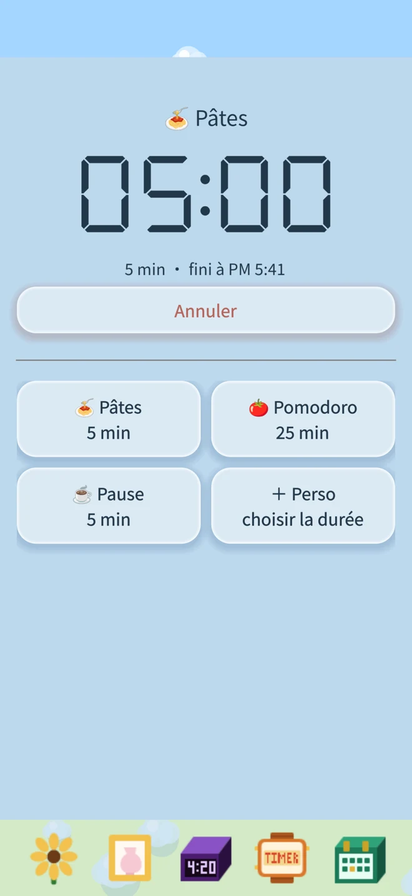
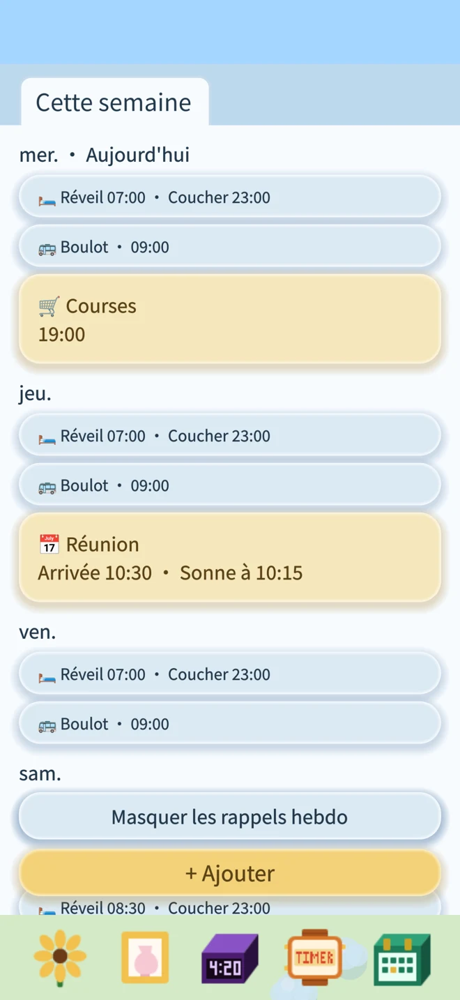
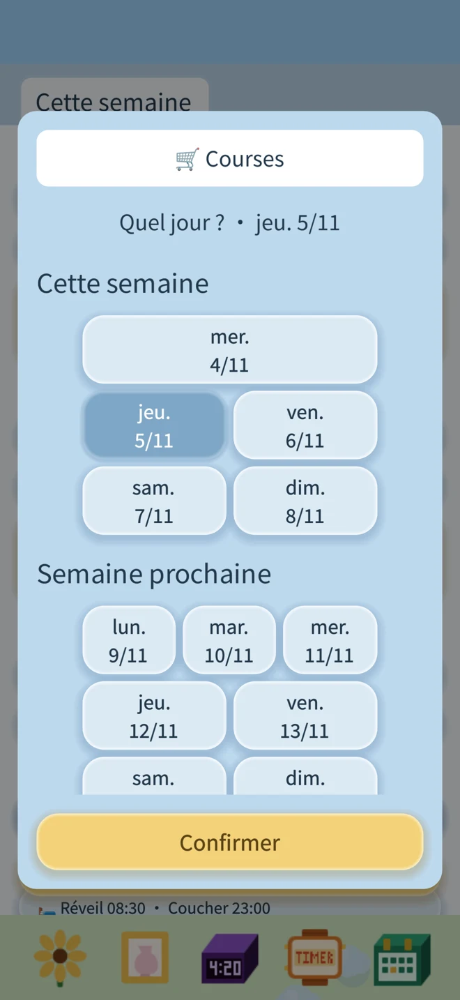
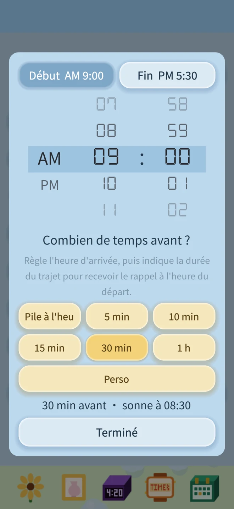

Minuteur : enregistre tes durées et réutilise-les
Des nouilles, un thé, une pause : choisis un modèle, puis confirme pour lancer le minuteur.
Enregistre tes propres noms et durées pour les réutiliser.

Pour ceux qui organisent leur vie par jour de la semaine.
Si tu organises ta vie selon ce que tu fais chaque jour de la semaine, Petite Fleur Réveil est pour toi. Travail le lundi, sortie de l’école le mercredi, cours le vendredi, réveil plus tard le week-end : choisis tes activités et l’heure du rappel pour chaque jour. Tes habitudes se répètent chaque semaine. Un changement ? Saute une seule fois le rappel ; la semaine suivante, il reprend normalement. Les habitudes hebdomadaires et les rendez-vous ponctuels se retrouvent dans le même agenda.
Sans publicité. Sans abonnement. Sans connexion Internet. À toi, tout simplement.
Tes alarmes, tes rappels et la croissance de ta fleur restent sur ton appareil.
Télécharger sur l’App StoreDes nouilles, un thé, une pause : choisis un modèle, puis confirme pour lancer le minuteur.
Enregistre tes propres noms et durées pour les réutiliser.

Cette semaine, la suivante et au-delà : tes projets sont classés par semaine. Les rappels bleus se répètent chaque semaine, les jaunes sonnent une seule fois.



Une fleur à toi
Choisis un tournesol ou une orchidée, avec le pot qui te plaît. Fais glisser l’arrosoir pour arroser et l’engrais pour nourrir ta fleur.
Sans eau pendant trop longtemps, elle baisse la tête. Un peu d’eau et elle se redresse.
Sur l’écran verrouillé aussi
Utilise les alarmes système d’iOS 26, avec ton autorisation. Une fois autorisées, elles peuvent sonner même en mode silencieux.
Le compte à rebours peut s’afficher sur l’écran verrouillé et dans la Dynamic Island des modèles compatibles. À la fin du minuteur, une notification te prévient.
Règle le réveil de demain. Arrose la fleur d’aujourd’hui.